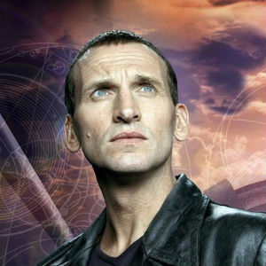

Portrayed by Christopher Eccleston.
|  | Born into a working class family in the Langworthy area of Pendleton, Salford, Lancashire, Eccleston is the youngest of three sons of Elsie and Ronnie Eccleston. His brothers, Alan and Keith, are twins, eight years his senior. The family lived in a small terraced house in Blodwell Street until the late 1960s, when they moved to Little Hulton. Eccleston attended Joseph Eastham High School, where he became head boy. At the age of 19, he was inspired to enter the acting profession by television dramas such as Boys from the Blackstuff. Eccleston completed a two-year Performance Foundation Course at Salford Tech before going on to train at the Central School of Speech and Drama. As an actor, he was influenced in his early years by Ken Loach's Kes and Albert Finney's performance in Saturday Night and Sunday Morning, but he soon found himself performing the classics, including the works of Shakespeare, Chekhov and Molière. At the age of 25, Eccleston made his professional stage debut in the Bristol Old Vic's production of A Streetcar Named Desire. Underemployed as an actor for some years after graduating school, Eccleston took a variety of odd jobs at a supermarket, on building sites, and as an artist's model. |